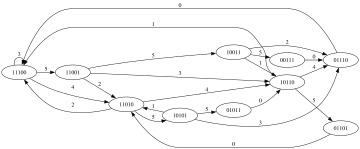

Zahl ~ Wurfhöhe
123456789abcdefghijklmnopqrstuvwxyz

8859a594bb85908a80b9a5b07a8047b66b5a69b40a5aa56a06b575959b93b9a3093a56bb7ab50b0a759908b7790999aa0b
5099aaa20892b84b834ab9551899a57b07aaa619b0748ab7ab0ab0b70b18b57b0b964a0b94a346b8b7822b8abb223579b6
4a84938578b847aab184b1a75b88048a7a8590aa794b08a59990bb70639b9792970778bb7349aaa6027a7bb52a499b8071
b884a7a60b575b7bb616aa0a83b9a0b92257786975a8ab78208a569b852b74a84abb5099990b07a69294b9b62395aa66bb0ab5a1a09681